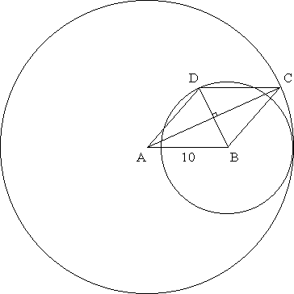

Solution to puzzle 31: Area of a rhombus
A rhombus, ABCD, has sides of length 10. A circle with center A passes through C (the opposite vertex.) Likewise, a circle with center B passes through D. If the two circles are tangent to each other, what is the area of the rhombus?
The diagram below shows the unique configuration consistent with the puzzle statement. The tangent point of the circles must lie on the extension of line AB, since their centers lie on AB.
By symmetry, the diagonals of a rhombus bisect each other and meet at right angles.
(Alternatively, for a simple vector proof, consider the dot product AC.BD.
| AC.BD | = (AB+AD).(AD-AB) |
| = AD.AD - AB.AB | |
| = 0, since |AB| = |AD| |
Let R = AC = radius of larger circle, and r = BD = radius of smaller circle.
Then, considering the four right triangles, the area of rhombus ABCD = 4 · (R/2) · (r/2) / 2 = Rr/2.
Considering one of the right triangles, (R/2)2 + (r/2)2 = 102, from which R2 + r2 = 400.
Since the circles meet at a tangent, on AB, we have R - r = 10.
Hence (R - r)2 = R2 + r2 - 2Rr = 100, and so 2Rr = 300.
Therefore the area of the rhombus = Rr/2 = 75 square units.
Source: Wayne VanWeerthuizen